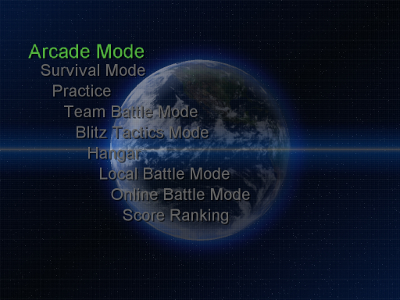

Options
The Ultimate Knight Windom XP is a 3D mech action with humanoid robots.
You can play on local split screen up to 4, and over the internet up to
10 player at the same time.
In Arcade mode you try to collect items for the mechs by collectiong the
dopped octahedron from the destroyed enemies.
In online matches you will fight withother peoples by using these items.
・Game menus

・Arcade Mode
2 players cooperative is possible. Collect items and color sets.
Sometimes special enemies will be appeared with higher stats.
・Survival Mode
1 player game mode. Fight against unlimited waves of enemies.
Always will two opponents on screen at the same time.
・Practice
1 player game mod. Test the moves and attacks on a dummy oppenent.
・Team Battle Mode
1 player game mod. 20 vs. 20 mech battle. Requires more PC resources.
・Blitz Tactics Mode
1 player game mode. Mission is to destroy the hostile warships before
they destroy ours. During the battle the team can be increased, so it
requires more PC resources.
・Hangar
Equip the obtained items, or chose from the acquired colors.
・Local Battle Mode
4 players gameplay is possible. Fight in a four player match on a single
computer.
・Online Battle Mode
10 players can be played simultaneously. Start or connect to an existing
server. You can win or lose points depending on your performance, and
your score based overall rank will be changed depending on this.
・Score Ranking
View your top scores achieved on diferent game modes.
Arcade Mode (Easy, Normal, Hard) and Survival mode will be listed here.